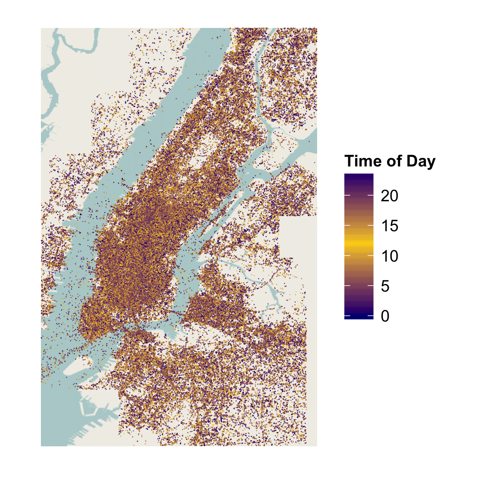

The sound of a neighborhood
Future explorations of individual users
We are now starting to look at the distributions of posts for top users. Top users tend to post in 2-5 neighborhoods in a given week, which we can use to understand their movements, and perhaps make predictions about where they live and work. We can also use the patterns from individual users to better understand correlations between certain neighborhoods and heavy social media usage, or correlations between range of movement and highly engaged users. This preliminary visualization shows the movements of the ten most active Instagram users in the first week of October 2013.

Exploring the data
Our initial motivation was to use data to generate sonic compositions—ideally ones that represent patterns in large quantities of social data. Sonification, as a way to perceptualize information, can be a challenging way to convey meaning. Therefore, before we mapped any of our data to sound, we explored simple parameters and demensions of our dataset—like geo-coordinates and timestamps—to understand meaningful differences in Instagram usage across New York City. We focused on understanding neighborhoods in New York, as well as the time of day that Instagram posts were made in each area.
In the chart below, you can see that there is a wide range in how many posts occur in different neighborhoods in the city:
{kind=link}
Looking more closely at the total volume of posts, we confirmed clear areas of post density, as well as areas that had more nighttime activity than others. The dots here get lighter as the day progresses—the darkest dots are posts that occurred just after midnight, and the lightest dots occurred late in the evening on the same day.
{kind=link}
A secondary way of seeing the density of posts over a single average day:
To better understand these density distributions, and to see if they varied widely from neighborhood to neighborhood, we looked at the volume of Instagram posts for specific areas, using MapBox and a "point-in-polygon" algorithm. We found that each neighborhood had a unique density signature, and chose to sonify this signature. By taking a week of Instagram data from October, we created histograms of posts over an average day. The frequency of the sound we used increases when then density of Instagram posts increases. Explore the results in the next section:{kind=link}